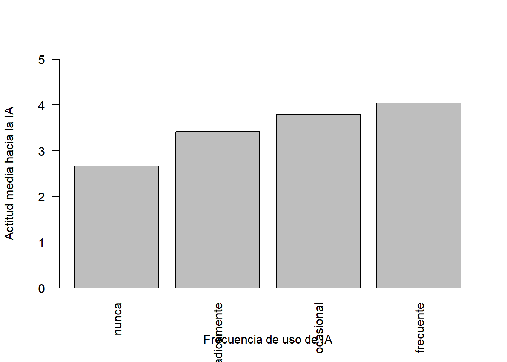
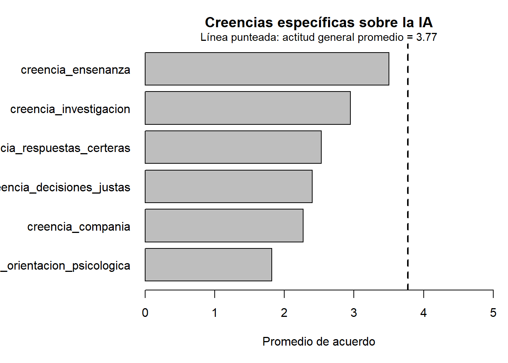

library(tidyverse)Cuarto paso. Responder preguntas con datos
Objetivo
En este paso vamos a usar lo que ya aprendimos para responder preguntas de investigación.
Hasta ahora cargamos la base, miramos su estructura y aprendimos a manipularla. Ahora vamos a construir algunas variables nuevas y usarlas para producir respuestas descriptivas.
La pregunta general que nos va a orientar es:
¿Una actitud favorable hacia la inteligencia artificial implica confianza en sus capacidades concretas?
Para responderla, vamos a trabajar con tres dimensiones:
- actitud general hacia la IA;
- creencias sobre capacidades específicas de la IA;
- diferencias entre grupos.
Cargamos paquetes y datos
encuesta_ia <- read_csv(
"https://raw.githubusercontent.com/gastonbecerra/primeros-pasos-r/refs/heads/main/data/encuesta_ia_subset.csv",
show_col_types = FALSE
)Pregunta 1: ¿qué tan favorable es la actitud general hacia la IA?
En la base tenemos varias variables que miden actitudes hacia la IA. De hecho, las podriamos seleccionar por su nombre para chusmear sólo ese pedazo de nuestra tabla.
encuesta_ia %>%
select(starts_with("actitud_"))# A tibble: 139 × 4
actitud_positiva actitud_trabajo_estudio actitud_vida_cotidiana
<dbl> <dbl> <dbl>
1 3 3 4
2 4 5 5
3 3 4 4
4 3 1 1
5 3 4 4
6 4 4 5
7 1 4 4
8 5 5 5
9 5 5 5
10 4 4 4
# ℹ 129 more rows
# ℹ 1 more variable: actitud_aprender_ia <dbl>Cada columna mide un aspecto distinto: una actitud general positiva, la valoración de la IA en el trabajo o el estudio, en la vida cotidiana, y la disposición a aprender más sobre IA.
Pero nuestra pregunta no refiere a cada ítem por separado, sino a una medida general de actitud. Para eso vamos a construir un indicador.
Un indicador es una variable nueva que resume varias variables relacionadas.
La forma más directa sería calcular el promedio de los cuatro ítems:
encuesta_ia <- encuesta_ia %>%
mutate(
actitud_ia = (
actitud_positiva +
actitud_trabajo_estudio +
actitud_vida_cotidiana +
actitud_aprender_ia
) / 4
)Como usamos <-, el resultado queda guardado en memoria dentro del objeto encuesta_ia. Esto es importante porque vamos a usar esta nueva variable en las preguntas siguientes.
Ahora podemos calcular un resumen de la actitud general hacia la IA:
encuesta_ia %>%
summarise(
actitud_media = round(mean(actitud_ia), 2)
)# A tibble: 1 × 1
actitud_media
<dbl>
1 3.77Como la escala va de 1 a 5, valores por encima de 3 indican una actitud relativamente favorable hacia la IA.
Pregunta 2: ¿la actitud cambia según la frecuencia de uso?
Ahora que guardamos actitud_ia dentro de la base, podemos usarla para comparar grupos.
La pregunta es:
¿La actitud general hacia la IA cambia según la frecuencia de uso?
Primero construimos una tabla resumen.
actitud_por_uso <- encuesta_ia %>%
mutate(
frecuencia_uso_ia = factor(
frecuencia_uso_ia,
levels = c("nunca", "esporadicamente", "ocasional", "frecuente")
)
) %>%
group_by(frecuencia_uso_ia) %>%
summarise(
n = n(),
actitud_media = round(mean(actitud_ia), 2)
)Guardamos el resultado en el objeto actitud_por_uso, porque lo vamos a usar para mirar la tabla y también para hacer un gráfico.
actitud_por_uso# A tibble: 4 × 3
frecuencia_uso_ia n actitud_media
<fct> <int> <dbl>
1 nunca 6 2.67
2 esporadicamente 25 3.42
3 ocasional 54 3.8
4 frecuente 54 4.04La tabla muestra una diferencia clara: quienes declaran usar IA con mayor frecuencia tienen una actitud promedio más favorable. El promedio más bajo aparece entre quienes dicen no usar IA, mientras que el más alto aparece entre quienes la usan de manera frecuente. De todos modos, conviene mirar también la cantidad de casos. La categoría nunca tiene pocos casos, por lo que ese valor debe leerse con cuidado.
Para visualizar mejor la comparación, podemos hacer un gráfico sencillo con funciones básicas de R.
barplot(
actitud_por_uso$actitud_media,
names.arg = actitud_por_uso$frecuencia_uso_ia,
ylim = c(0, 5),
las = 2,
ylab = "Actitud media hacia la IA",
xlab = "Frecuencia de uso de IA"
)
Pregunta 3: ¿en qué capacidades de la IA se confía más y menos?
Además de las actitudes generales, la base tiene variables sobre creencias en capacidades específicas de la IA. Estas variables tienen algo en común: todas miden creencias sobre capacidades de la IA y todas usan la misma escala de respuesta. Eso nos permite compararlas entre sí.
La pregunta es:
¿En qué capacidades de la IA se confía más y en cuáles se confía menos?
Para responderla, necesitamos calcular el promedio de cada creencia.
El problema es que, tal como está la base, cada creencia aparece como una columna distinta:
encuesta_ia %>%
select(id_caso, starts_with("creencia_"))# A tibble: 139 × 7
id_caso creencia_decisiones_j…¹ creencia_respuestas_…² creencia_orientacion…³
<dbl> <dbl> <dbl> <dbl>
1 1 1 2 1
2 2 3 2 2
3 3 3 3 1
4 4 2 3 2
5 5 2 2 1
6 6 3 4 3
7 7 4 5 4
8 8 5 5 3
9 9 1 2 1
10 10 3 4 1
# ℹ 129 more rows
# ℹ abbreviated names: ¹creencia_decisiones_justas,
# ²creencia_respuestas_certeras, ³creencia_orientacion_psicologica
# ℹ 3 more variables: creencia_compania <dbl>, creencia_investigacion <dbl>,
# creencia_ensenanza <dbl>Este formato es cómodo para ver la base caso por caso. Pero no es tan cómodo para comparar las creencias entre sí.
Lo que necesitamos es otra estructura: una tabla donde haya una columna que indique qué creencia estamos mirando y otra columna que tenga el valor de la respuesta.
Es decir, queremos pasar de esto:
| id_caso | creencia_decisiones_justas | creencia_respuestas_certeras |
|---|---|---|
| 1 | 3 | 4 |
| 2 | 2 | 5 |
A esto:
| id_caso | creencia | valor |
|---|---|---|
| 1 | creencia_decisiones_justas | 3 |
| 1 | creencia_respuestas_certeras | 4 |
| 2 | creencia_decisiones_justas | 2 |
| 2 | creencia_respuestas_certeras | 5 |
A este cambio se lo suele llamar pasar de formato ancho a formato largo.
En el formato ancho, las creencias están en los nombres de las columnas.
En el formato largo, las creencias pasan a estar dentro de una variable. Eso nos permite agrupar por creencia y calcular un promedio para cada una.
Para hacer ese cambio usamos pivot_longer():
creencias_largo <- encuesta_ia %>%
select(id_caso, starts_with("creencia_")) %>%
pivot_longer(
cols = starts_with("creencia_"),
names_to = "creencia",
values_to = "valor"
)Guardamos el resultado en un nuevo objeto llamado creencias_largo. No reemplazamos encuesta_ia, porque la base original nos sigue sirviendo para otras preguntas. Veamos cómo quedó:
glimpse(creencias_largo)Rows: 834
Columns: 3
$ id_caso <dbl> 1, 1, 1, 1, 1, 1, 2, 2, 2, 2, 2, 2, 3, 3, 3, 3, 3, 3, 4, 4, 4…
$ creencia <chr> "creencia_decisiones_justas", "creencia_respuestas_certeras",…
$ valor <dbl> 1, 2, 1, 3, 4, 4, 3, 2, 2, 2, 3, 5, 3, 3, 1, 1, 3, 4, 2, 3, 2…Ahora cada fila representa una respuesta de una persona a una creencia específica.
Con esta estructura, la comparación es mucho más directa, ya que podemos agrupar por creencias y operar sobre valores:
creencias_largo %>%
group_by(creencia) %>%
summarise(
media = round(mean(valor), 2)
) %>%
arrange(desc(media))# A tibble: 6 × 2
creencia media
<chr> <dbl>
1 creencia_ensenanza 3.5
2 creencia_investigacion 2.95
3 creencia_respuestas_certeras 2.53
4 creencia_decisiones_justas 2.4
5 creencia_compania 2.27
6 creencia_orientacion_psicologica 1.82Como podemos ver, sólo enseñanza e investigación parecen ser capacidades de la IA en las que los encuestados creen. Este dato se nos escapa si nos quedamos mirando sólo valores de actitudes globales.
Pregunta 4: ¿la actitud general coincide con la confianza en capacidades específicas?
Hasta ahora trabajamos con dos niveles distintos:
- una medida general de actitud hacia la IA;
- varias creencias sobre capacidades específicas de la IA.
La pregunta ahora es:
¿Una actitud general favorable hacia la IA implica confianza en todas sus capacidades concretas?
Para responderla, no vamos a construir todavía un nuevo indicador. Primero vamos a comparar la actitud general promedio con cada una de las creencias específicas.
Para eso usamos el objeto creencias_largo, que construimos en la pregunta anterior.
Calculamos la media de cada creencia y agregamos, como referencia, la media general de actitud hacia la IA.
creencias_resumen <- creencias_largo %>%
group_by(creencia) %>%
summarise(
media_creencia = round(mean(valor), 2),
.groups = "drop"
) %>%
mutate(
actitud_general = round(mean(encuesta_ia$actitud_ia), 2)
) %>%
arrange(media_creencia)Veamos la tabla:
creencias_resumen# A tibble: 6 × 3
creencia media_creencia actitud_general
<chr> <dbl> <dbl>
1 creencia_orientacion_psicologica 1.82 3.77
2 creencia_compania 2.27 3.77
3 creencia_decisiones_justas 2.4 3.77
4 creencia_respuestas_certeras 2.53 3.77
5 creencia_investigacion 2.95 3.77
6 creencia_ensenanza 3.5 3.77Esta tabla compara dos cosas:
media_creencia: el promedio de acuerdo con cada capacidad específica;actitud_general: el promedio general de actitud hacia la IA.
La columna actitud_general repite el mismo valor porque funciona como punto de comparación. No corresponde a cada creencia, sino al promedio general de actitud en toda la base.
Ahora hacemos un gráfico. Cada barra muestra la media de una creencia específica. La línea punteada muestra la actitud general promedio hacia la IA.
# Guardamos la media general de actitud para usarla como referencia
actitud_media <- mean(encuesta_ia$actitud_ia)
# Ajustamos el margen izquierdo para que entren los nombres largos
par(mar = c(5, 10, 3, 1))
# Hacemos un gráfico de barras horizontal con la media de cada creencia
barplot(
creencias_resumen$media_creencia,
names.arg = creencias_resumen$creencia,
horiz = TRUE,
xlim = c(0, 5),
las = 1,
xlab = "Promedio de acuerdo",
main = "Creencias específicas sobre la IA"
)
# Agregamos una línea vertical con la actitud general promedio
abline(
v = actitud_media,
lty = 2,
lwd = 2
)
# Agregamos una aclaración arriba del gráfico
mtext(
paste("Línea punteada: actitud general promedio =", round(actitud_media, 2)),
side = 3,
line = 0,
cex = 0.9
)
El gráfico muestra que la actitud general hacia la IA está por encima de la mayoría de las creencias específicas.
Esto permite una lectura importante: valorar positivamente la IA en términos generales no implica confiar del mismo modo en todas sus capacidades concretas.
La confianza aparece más alta en tareas vinculadas con conocimiento y aprendizaje, como enseñar o investigar. En cambio, es más baja en capacidades asociadas con dimensiones afectivas o sensibles, como brindar compañía u ofrecer orientación psicológica.
Entonces, la aceptación de la IA no parece funcionar como una disposición única. Más bien, depende del tipo de tarea: se puede tener una actitud general favorable hacia la IA y, al mismo tiempo, poner límites sobre qué capacidades se le atribuyen.